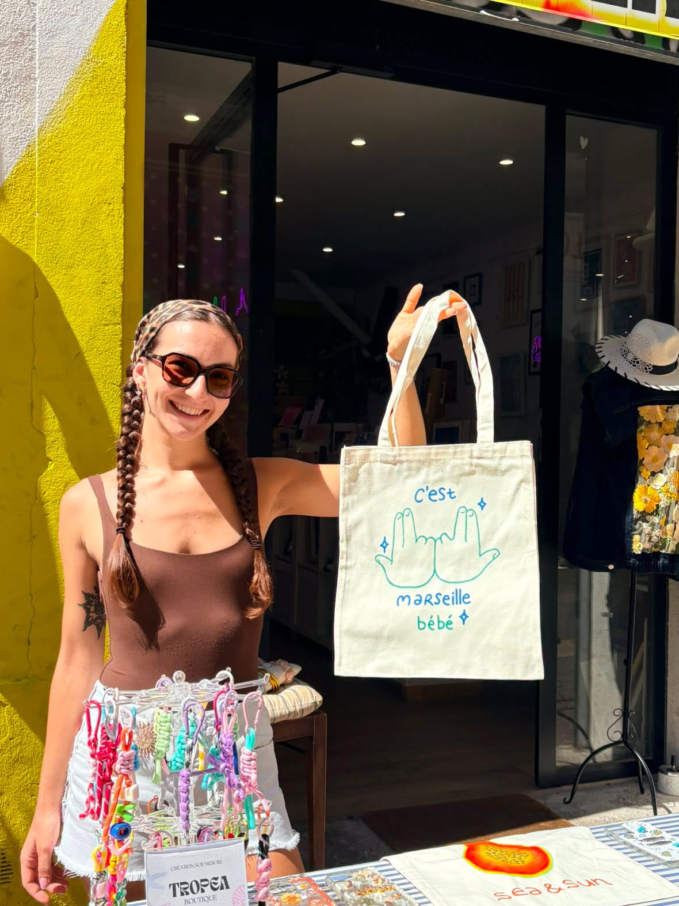

Arrivée à Marseille à 18 ans, avec juste l’envie de découvrir : pas de connaissances, pas d’argent, pas de projets.
Les premières années, j’ai appris la langue et j’ai touché à plein de métiers différents. Le contact humain, j’ai toujours adoré ça.
L’art est toujours resté pas loin, puis le graphisme est devenu une évidence. Cette année, diplôme en poche, j’ai tout quitté pour m’y consacrer pleinement.
Aujourd’hui, je crée avec sensibilité, toujours à l’écoute et proche de vous.
Là tu connais un peu plus sur moi.
Bienvenu.e dans mon univers.
À très vite, papillon 🦋